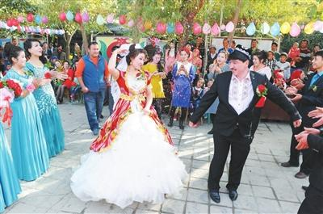
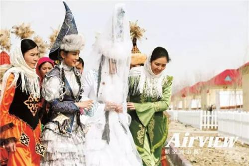
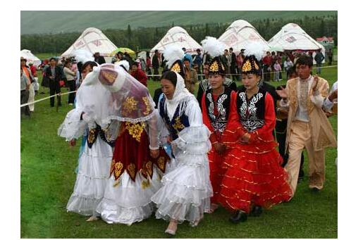
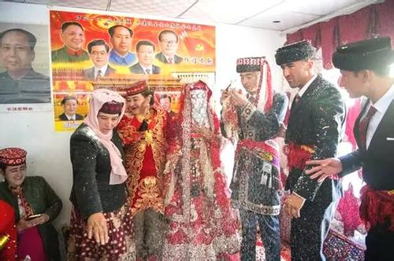

西北少数民族婚俗
我国是一个拥有五十多个少数民族的国家，长期以来，他们辛勤的劳动，繁衍生息，为国家经济、文化的发展做出了巨大的贡献。而生活在西北的少数民族由于所处的特殊地理条件、不同的文化背景以及别样的生活方式使得他们形成了别具一格的文化风俗和民族特色，最具有代表性的就是婚礼习俗。婚礼习俗比较特别，是人生所有礼仪中最热闹、最值得庆祝也是最隆重的一个，也是最能反映出一个民族的审美观、审美情趣以及少数民族人民对审美的追求。有史以来，所有的民族都要经历从无知的、野蛮的时代到文明时代的转变。文明时代的到来产生了作为社会组织的家庭以及婚姻。他是人类社会生产方式发展到一定程度的产物。而不同的地区，不同的生活习俗造就了不同的婚礼习俗。西北少数民族就有着和我国其他地区很大差异的婚礼习俗。本文将进行该婚俗的研究并通过该研究以期望达到大家对少数民族文化的理解和认同，使其更有利于民族的团结、社会的和谐。
一、西北地区四大民族婚礼特色
1.维吾尔族婚礼 
首先是新郎新娘的衣服着装，在婚礼的当天，他们都要盛装打扮，新郎要头戴小花帽，脚穿黑色的皮靴子。而新娘则身上穿着大花裙，戴着头纱，等待着男方迎亲队伍的到来。其次是结婚的仪式，他们也有司仪，并会对新郎和新娘分别问话，就像电视里面西方人在教堂中举行的仪式一样。当然新娘和新郎都会做出肯定的回答，然后司仪便会说一些吉利的话，并诵读《古兰经》。随后，司仪便会拿出一个事先蘸过盐水的馕，这个东西的意义在于它代表在今后的日子里不论发生什么事情，他们都能够有难同当，有福同享。 当然仪式结束后就是新娘随着新郎回家，这个时候新娘的歌手就要唱告别歌，而且还得模仿新娘母亲的口气，以表达自己对女儿的不舍。而新郎的迎亲队伍也会弹着其他的乐器进行回应，他们都在队伍的最前头。随后新郎新娘的彩车紧跟着他们。最后到达男方家中的时候都要从门槛的火盆上跳过去，再进新房。而后新娘则坐在放着厚厚的被褥的床上。这预示着温暖和顺产。
2.哈萨克族婚礼
 哈萨克民族的很多男女青年有着不同的恋爱方式，他们主要通过“姑娘追”来建立关系。达到结婚的时候，就通过对唱来举行婚礼。这是他们最大的特色，也是美的一种体现。婚礼那一天，新娘唱着告别的歌，而她的亲朋好友也会和他对唱，内容也是告别，而且新娘还会坐在帷幔后哭泣。此时，新郎唱劝嫁歌。然后新娘父母双手放在胸前口喊“阿明，阿明”进行送别。在这期间为了增添气氛，还会有一些赛马和叼羊的活动。当新娘到男方家时，公公婆婆就会撒一些代表象征喜庆和吉祥的糖果给小伙子们去抢。婚礼仪式在新郎家开始时先由新郎唱《打开面纱歌》，然后揭开新娘的面纱。新娘给公公婆婆行屈膝礼、并向火炉中撒酥油（或羊油）。 在座的亲戚开始为他们祝福。然后新人一起喝下由毛拉念过经的圣水。最后新娘坐在刚杀了的羊皮上直到吃完羊肉，并最终接受老人的祝福。
3.柯尔克孜族婚俗 
“九”是柯尔克孜族的吉祥数字，所以不论什么仪式都要按照九来办。特别是聘礼和订婚。婚礼分三天举行。第一天，主要是由新郎和新郎的家人带上礼物和羊，骑马去新娘家而新娘家会带上一只杀了的羊在半路上迎接。而后他们互相争对方的东西，并互相把羊扔到对方的地上，表示欢迎和同意。随后新娘给新郎的脸部撒上代表洁白无瑕的白面粉。第二天，在女方家里举行婚礼，双方的亲朋好友都来参加，此时司仪会为他们祈祷和祝福。并把一个油果切成两半给新娘和新郎分别吃下，最后司仪在他们脸上撒上代表婚姻纯洁的白面粉。第三天就由新娘的母亲和嫂子陪同她到男方家中去，一路上他们要跨越火堆，到了新郎家还要过帐篷前面的火塘。
4.塔吉克族婚俗 
塔吉克族的婚礼通常也是举行三天，第一天他们各自在家中准备，黄昏的时候新郎在大家的陪同下去迎娶新娘。新郎享受国王级别的待遇，不论贫穷和富贵都一样对待，此时岳父母会向新郎和伴郎撒面粉表示祝福。并送上见面礼，通常是酥油茶和花围腰。他们的婚礼是按照伊斯兰教的规矩进行，也需要喝下代表同甘共苦和白头偕老颂过经的盐水，并且在他们的婚礼中一直有鹰笛和鹰舞陪伴。
二、西北少数民族婚礼中的爱与美
1.恋爱习俗中的艺术与美
婚姻基本上都要经历恋爱的阶段，当然最早的婚俗还数成年礼。它标志着生命的成熟，并可以开始婚姻生活，是婚姻文化的重要组成部分。在西北少数民族的所有成年礼中，蕴含着浓厚的艺术情调。他体现了各民族特有的审美意识。各个民族的时间也是不同的，青海的藏族在每年的农历正月初三。他们主要是给家中满十五周岁的女孩子改变发型并带上发饰举行成人礼，而亲戚也要带上礼物见证这一时刻由母亲解开女孩头上的童式发辫，编成成人式。这就表示姑娘已经长大成人。 而该女子还要尽一切资源进行打扮，她们一般会穿上鲜艳的藏袍，以及绣有各色图案花纹的藏靴并围上腰带。这是他们人生中最大的喜事，她们可以尽情地打扮，就像一个结婚的新娘那样去打扮。因此这个成年礼充分体现了藏族人民对成年女性所特有的审美标准。他是人生由少年向成年的一个转折点。
只有真挚的爱情才能够产生美满的婚姻。他们都具有美的吸引力，首先是爱情，众所周知，爱情就是因为有着独特的美，才具有如此吸引力，才会使得这么多的男男女女为爱痴狂为爱疯癫。在西北的少数民族也不例外，当他们步入成年的时候，便会以各自特有的方式去表达自己对爱情的执着和向往。就像上文中所提到的哈萨克民族，他们主要生活在新疆，并一直过着随草而居的游牧生活，这种独特的生活方式造就了他们独特的爱情观和别具一格的爱情审美观。可想而知，在大草原上，姑娘们的心仪对象当然是那些高大、威武又擅长骑马的青年。这就促使了“姑娘追”这种特别的求爱方式的产生。 说起这个风俗还有几分乐趣，这项活动要求成对的男女骑着各自的马跑一个来回，去的时候只有男孩子不停地说自己想说的话，当然有些小伙子会不停的调戏女方，但是女方不能够表示出任何的不悦。但是回来的时候就换了角色了，这时候小姑娘便可以用鞭子鞭打男方，而男方却不能够还手，只能不停地跑，这就形成了小伙子一付落荒而逃的风景，这也是一道不一样的风景线。当然女孩子用的这个鞭子也有讲究的，若是姑娘对这个小伙子有意思的话，这个鞭子是不会真正打到男方的身上的，只是一个形式而已，但要是小姑娘没有意思，那个男孩子可就惨了，这回可是真的打了。 因此跑一圈下来之后小伙子心里就基本上有数了。这种方式的求爱给大家留下了难忘的、动人的一幕，没有任何的思想禁锢，只有自由和美好。 用歌声来表达自己的爱情是很多民族所共有的风俗。这也是西北少数民族的一大特色。男女之间的爱情往往是通过唱歌所形成的。像生活在青海牧区的藏族人民就喜欢通过这种方式表达他们的爱意，他们最喜欢唱的就是“拉伊”，他们通常在野外进行对唱，来表达自己对对方的一片倾心和爱意，这有着一种特别的艺术美感，使得他们的爱更加有情意和甜美。
西北少数民族表达爱情的另一个特色就是用美的信物。青海海西蒙古族的青年就会在恋爱的时候送上一些自己精挑细选的信物，比如手帕、手镯等等用来表示自己对对方的爱意。美的信物当然是具有不同的象征意义，他暗含着令人寻味的审美意蕴。而上面提到的藏族青年也经常通过交换信物来表达自己的情意。他们的不同信物有着不同的意义，像手镯表示定情，长的腰带表示爱天长地久。这就是古代人们常说的睹物思人吧。
2.婚姻中的审美意识
婚姻是爱情的升华，它自然充满了美。没有人不希望新人能够天长地久。这种审美的心态通常被西北少数民族的人们以各种奇特的方式所表达。不同的民族表现的方式千差万别，但是他们的目标都一样为了祝福新人永结同心，白头到老。土族在举行婚礼后，新郎要在新娘的闺房中解开新娘头上的红绳子并系在自己的脚脖子上，还要用自己拿来的梳子分别给自己和新娘梳三下头发，这就表示“千里姻缘一线牵，结发夫妻永相伴”。哈萨克族的登门仪式也非常独特，他们引用的是骨肉相连的典故。 在结婚的当天，他们要在新娘家中的布幔里共食一块羊胸的骨肉，预示着他们不分彼此，永不分离。 有撒拉族的“挤门”风俗，可谓是一种很有情趣的事情，主要是在新娘到达新郎的家中时并不是直接进入家门，男方的亲戚们也不是站在门外迎接，而是全部堵在门内部，他们并不真的锁上门，而是把门虚掩着，然后大家在门后面顶着不让新娘和她的同伴进入，而新娘这边则要通过不断挤门来达到进门的目的，这个其实对于双方来说已经淡化了原先的意思。对于女方来说，她们想不占地就进入男方家中因为这是她们最宝贵的一天，而男方则认为这样让新娘步入自己家中有面子，可以轻松地召唤女方。 所以才会互不相让出现这种挤门的习俗，但是现在主要是为了体现出喜庆的婚礼的一种滑稽美和戏剧美。最后，还有一个很明显的特点，对于所有的西北少数民族婚事来说，她们都具备：婚礼的现场都充满了动人的歌声。无论是新娘离开娘家的时候唱的告别歌，岳父母回应的祝福歌和依恋不舍之歌，还是宴请客人，举行婚礼仪式上的各种祝福的歌都为婚礼增添了不少艺术特色和美，使得婚礼保持在欢乐的艺术氛围中。上面的这几个例子都充分表明了不同民族婚事都表达了浓厚的审美情趣。
三、结语
西北少数民族的婚礼中存在着太多的艺术和美，各个民族表现的美各不相同，但是目的都一样。在恋爱阶段，除了用别具一格的成人礼来表示女孩子到达了可以谈婚论嫁的时候，而在表达情意时，她们有的用不同的信物，有的用不一般的活动，比如用骑马示爱，有的用别具艺术风格的对唱来表达，这些都有着少数民族别样的风格。在举行婚礼的时候，更有各色各样的表达方式来祝福新人永结同心，天长地久。